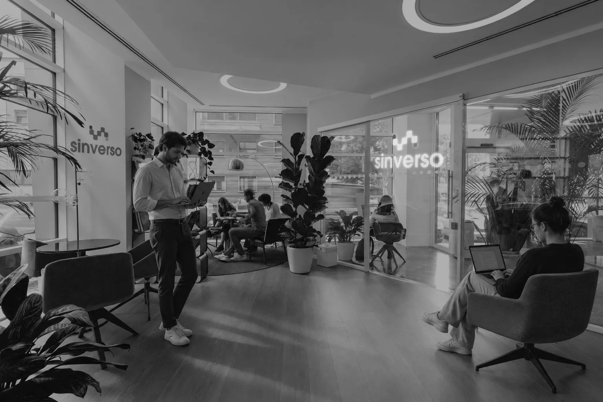

1.ATRAER
- Estrategia digital
- Contenido orgánico
- Pauta digital
- Influencer Marketing
Muchas empresas ya cuentan con equipos, herramientas, canales y tecnología. El problema aparece cuando cada pieza trabaja por separado.
Marketing genera oportunidades. Ventas intenta convertirlas.
El CRM almacena información. WhatsApp recibe conversaciones. Los datos muestran resultados. Pero cuando estas piezas no están conectadas, el negocio pierde visibilidad, tiempo y oportunidades.
No creemos
en acciones aisladas.
Identificamos la causa
antes que el síntoma.
Una campaña puede generar oportunidades. Un CRM puede organizar información.
Una automatización puede ahorrar tiempo. Una estrategia de contenidos puede atraer atención.
Pero cada elemento necesita cumplir un propósito dentro de un sistema.
LAS HERRAMIENTAS, POR SÍ SOLAS, NO GENERAN CRECIMIENTO. LOS SISTEMAS SÍ.
Mientras el mercado suele abordar el crecimiento desde acciones y soluciones independientes, en SINVERSO diseñamos una infraestructura donde estrategia, adquisición, contenidos, tecnología, procesos y datos trabajan bajo una misma dirección.
Antes de sumar una herramienta, una campaña o una automatización, entendemos qué está limitando realmente el potencial de tu negocio. Conectamos las piezas necesarias y construimos un sistema capaz de atraer, convertir y escalar con mayor claridad y control.
CON EL MÉTODO SINVERSO
Desde la primera interacción hasta la oportunidad comercial, diseñamos y conectamos las piezas
que tu negocio necesita para que ninguna oportunidad se pierda por falta de estructura.

No se trata de sumar capacidades.
Se trata de conectar las piezas correctas para que todo encaje.
Definimos la dirección antes de ejecutar. Identificamos oportunidades, objetivos, audiencias y puntos críticos del recorrido comercial.
Creamos contenidos para canales físicos y digitales que construyen atención, posicionamiento y confianza, siempre conectados con una estrategia.
Diseñamos y optimizamos campañas orientadas a generar oportunidades comerciales y obtener información útil para la toma de decisiones.
Conectamos marcas con audiencias relevantes mediante estrategias de influencia, gestión y medición.
Organizamos la información comercial para que los leads no se pierdan entre conversaciones, hojas de cálculo y procesos desconectados.
Diseñamos flujos que reducen tareas repetitivas, mejoran el seguimiento y permiten que el equipo concentre su tiempo donde realmente aporta valor.
Diseñamos agentes de inteligencia artificial que interactúan, analizan información y ejecutan tareas dentro del sistema. Los conectamos con los canales, procesos y herramientas del negocio para automatizar acciones y hacer que las oportunidades avancen.
Creamos experiencias digitales estructuradas para convertir atención en oportunidades y conectar el sitio con el resto del sistema.
Integramos WhatsApp al proceso comercial para facilitar seguimiento, remarketing, recompra y gestión de oportunidades.
Porque los leads tienen
seguimiento y trazabilidad.
Porque las tareas repetitivas
pueden automatizarse.
Porque la información
está conectada.
Porque marketing y ventas
pueden trabajar sobre
una misma información.
Porque el crecimiento deja de
depender exclusivamente
de procesos manuales y personas.
PORQUE NO ACEPTAMOS LAS EXPLICACIONES FÁCILES
SOBRE EL CRECIMIENTO.
Somos estratégicos porque necesitamos entender el negocio. Somos disruptivos porque cuestionamos lo que dejó de funcionar. Somos ejecutores porque no nos quedamos en el diagnóstico.

SIN CUENTOS.
SIN VERSOS.
SOLO CRECIMIENTO CON DIRECCIÓN.
ENTENDAMOS QUÉ ESTÁ LIMITANDO TU CRECIMIENTO.
Hablemos de tu negocio, de lo que ya tienes
y de lo que realmente necesitas conectar.